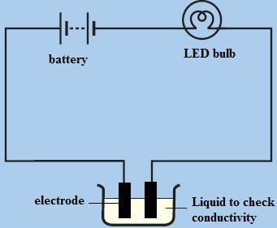

Электрический ток поступает в жидкость на положительной пластине (называемой анодом) и покидает ее на отрицательной пластине (называемой катодом).
Некоторые жидкости проводят электричество — они содержат ионы, а некоторые нет — они не содержат ионов. У некоторых есть много ионов в расчете на м³, у других — меньше.
В зависимости от проводимости жидкости делят на:
Проводимость жидкостей
Проводимость жидкостей зависит от способности жидкостей образовывать ионы. Некоторые жидкости, такие как масло или спирт, не образуют ионов и не проводят электричество. Уксус — это в основном вода с небольшим количеством уксусной кислоты в ней. Уксусная кислота распадается на ионы в воде. Электропроводность водопроводной воды зависит от ее жесткости.Проводимость электролита может быть увеличена за счет увеличения разбавления.
Вода
На самом деле часто измеряется чистота воды в лабораториях, которым требуется высокая чистота с точки зрения ее неспособности пропускать электрический ток. Для чистой воды будет протекать только чрезвычайно малый ток, потому что в жидкости растворено недостаточно заряженного вещества.
С другой стороны, если добавить немного растворимой ионной соли, такой как хлорид натрия (NaCl), который распадается в воде на ионы натрия (Na+) и хлорида (Cl-), мы обнаружим, что вода может пропускать значительный ток.
Природные воды в разной степени переносят течение тока. Морская вода с ее высокой концентрацией растворенных солей является лучшей из них. Тем не менее даже когда молния, несущая огромный ток, ударяется о поверхность моря, ток быстро рассеивается по мере распространения.
Высокоупорядоченные кристаллы положительно заряженных ионов натрия и отрицательно заряженных ионов хлора хлорида натрия (NaCl или поваренной соли) распадаются при растворении в воде с образованием ионов, которые могут перемещаться в растворе и, следовательно, переносить ток.
Ионы переносят ток во многих важных системах. Нервные клетки животных, например, используют комбинацию простых ионов, таких как Na+, K + и Cl- для распространения нервных импульсов по цепочке нейронов с очень высокой скоростью.
Электролиз воды
Если электрический ток пропустить через воду, в которую добавлено несколько капель концентрированной кислоты, на обоих электродах образуются пузырьки газа. Если газы собраны и протестированы, то будет установлено, что: Кислород выделяется на аноде, а водород — на катоде.Это показывает полярность ионов водорода и кислорода в растворе. Выделяется в два раза больше водорода, чем кислорода, это согласуется с химической формулой воды H2O.
Применение электролиза
Электролиз имеет много применений в промышленности, некоторые из них:
1. Гальванопокрытие — это означает покрытие одного металла другим с помощью электролиза:
2. Извлечение и очистка некоторых металлов: медь очищается электролизом, а алюминий извлекается из ее руды этим методом.
Изменение проводимости жидкости
Проводимость жидкости можно изменить, добавив немного ионов. Обычно это делается путем добавления примеси в жидкость. Дистиллированная вода не содержит ионов и поэтому не будет проводить электричество, но если медленно добавить в нее соль, та растворится, заряженные ионы натрия и хлорид-ионы в соли будут перемещаться по воде, проводя электричество. Величина тока может быть использована для измерения концентрации раствора соли.
В деионизированной воде достаточно даже потирания рук для образования небольшого количества примесей, что позволит воде проводить электричество.
Влияние жидкостей на светодиод

Электрические заряды, такие как электроны и отрицательные ионы, будут легко течь в вакууме или почти в вакууме в виде электричества, если есть положительные электрические заряды, притягивающие частицы. Аналогично, положительные ионы будут течь, если есть отрицательные электрические заряды, притягивающие частицы.
По мере увеличения числа атомов или молекул в пространстве между электрическими зарядами сопротивление электрическому потоку увеличивается.
Наиболее распространенное место, где протекает поток электрических зарядов почти в вакууме, — это телевизионная кинескопная трубка старого образца или электронно-лучевая трубка (ЭЛТ). В какой-то степени этот тип электрического потока также наблюдается в люминесцентной лампе. Солнце испускает потоки заряженных частиц, которые, притягиваясь к магнитным полюсам Земли, создают Северное и Южное сияние.
Электронно-лучевая трубка
Из электронно-лучевой трубки (ЭЛТ) удалена большая часть воздуха. Нить накала, нагретая добела, испускает электроны. Отрицательный заряд также прикладывается к нити накала или катоду для ускорения электронов от нее. На другом конце горловины электронно-лучевой трубки находится ряд пластин, которым придан положительный электрический заряд. Это ускоряет электроны по направлению к нему. Пластины называются анодами.
Изменения в их зарядах могут направлять пучок высокоскоростных электронов, когда они проходят мимо и врезаются в экран телевизора или электронно-лучевой трубки, что приводит к вспышкам света.
Пучок электронов называется катодным лучом.